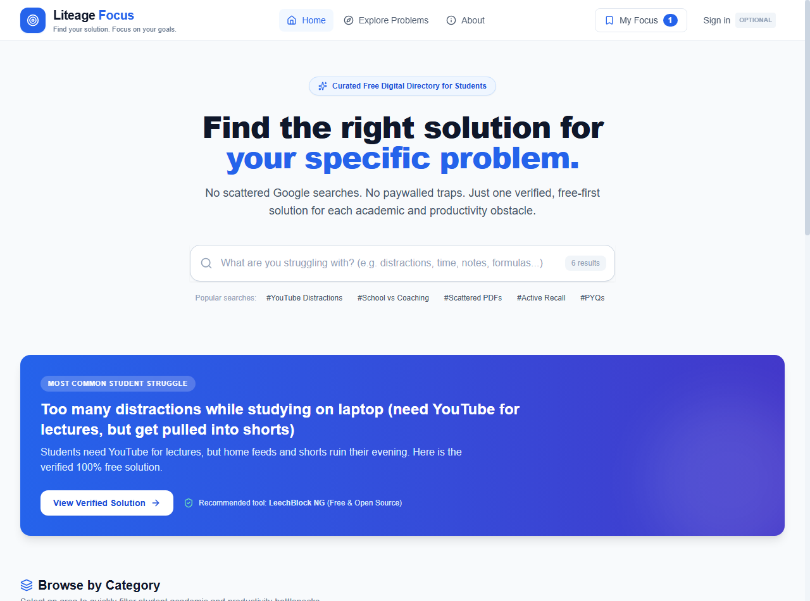
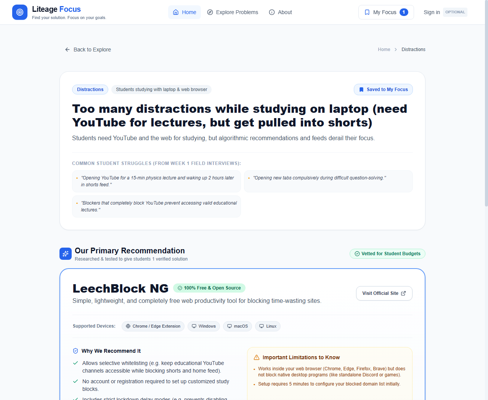
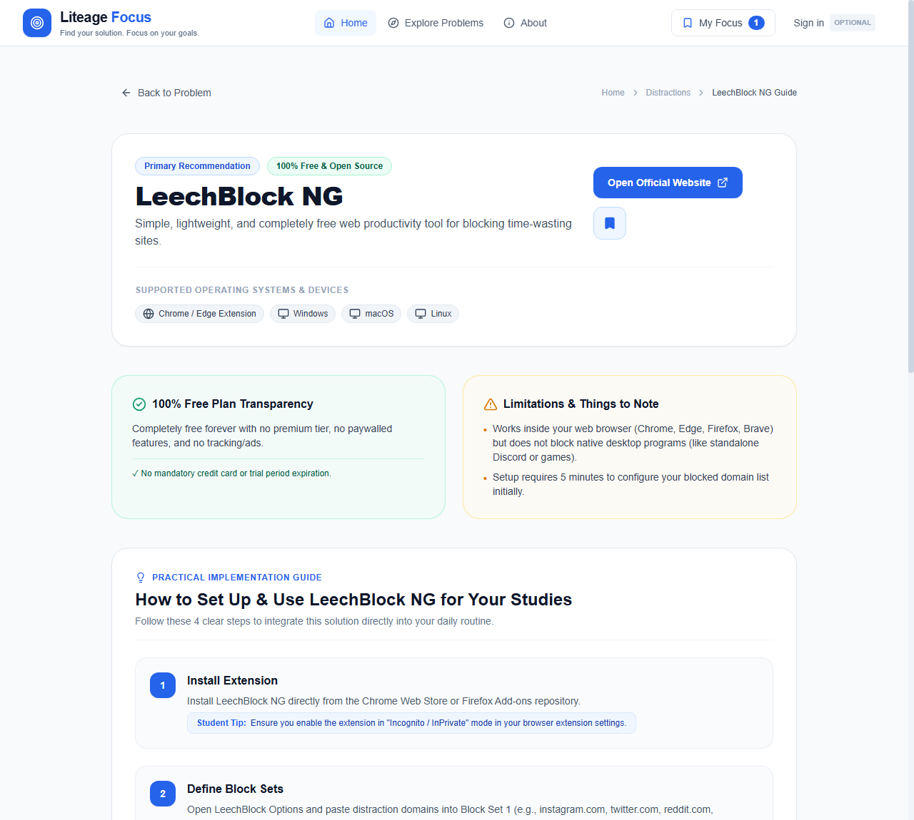

| Full name | Shivendra Kumar Sharma |
| Registered email | tech.stud.gaming2011@gmail.com |
| App name | Liteage Focus |
| Replit app link (anyone can open) | https://liteage-focus.replit.app (GitHub repository: https://github.com/TSGaming6239/liteage-focus) |
| The problem it solves (one line from your Week 1 brief) | Students struggle to find suitable digital solutions for study and productivity problems because resources are scattered, some tools do not fit their devices or routines, and useful features may be paid. |
| Screen | What it shows and does | Paste screenshot |
|---|---|---|
| Screen 1 · Home (Discovery & Search) |
• Liteage Focus branding, tagline, and navigation (Home, Explore, About, My Focus, Sign in Optional). • Real-time search bar filtering student problems by keyword, symptom, or subject. • Category filter pills (Distractions, Time Management, Notes & Material, Revision & Memory, Exam Preparation). • Popular Student Problems grid showing problem context, target audience, and primary recommendation preview. • My Focus bookmarking: Clicking any card navigates seamlessly to Screen 2. |
 |
| Screen 2 · Problem Page (Problem & Recommendation Overview) |
• Breadcrumbs and back navigation to Home/Explore. • Problem context reflecting real student interview struggles (e.g. YouTube distractions). • Our Primary Recommendation card: ONE vetted tool (LeechBlock NG) with verified pricing status (100% Free & Open Source). • Supported device badges (Chrome/Edge Extension, Windows, macOS, Linux). • Why We Recommend It vs. Important Limitations to Know. • Primary action button: "View Full Setup Guide & Details" leading to Screen 3. • Alternative solutions: Curated options (Cold Turkey, Unhook). |
 |
| Screen 3 · Solution Details (Implementation Deep-Dive) |
• Full tool overview, verified official URL, and verified free pricing status. • Device compatibility matrix for laptops, phones, and browsers. • 100% Free Plan Transparency explaining zero hidden paywalls. • Practical 4-step setup guide tailored for students with specific action tips (e.g. how to whitelist educational lectures). • Comparison with alternatives explaining exact differences. • Action bar: "Launch Official Website", "Save to My Focus" with toast feedback, and "Back to Problem". |
 |
| Person (role only) | Task you gave | Where they got confused | What they said |
|---|---|---|---|
| Person 1: Classmate, Class 12 (JEE Aspirant) | Task: Open Liteage Focus on laptop, find a free tool to block YouTube distractions while keeping lecture channels accessible, and find the step-by-step setup guide. | [PENDING LIVE USER TEST] (Observe: Do they use search or category pills? Do they hesitate between Screen 2 and Screen 3?) |
[PENDING LIVE USER TEST] (Record exact student quote) |
| Person 2: Classmate, Class 11 (CBSE Board Student) | Task: Find a free tool to organize scattered PDF notes and formula sheets, verify whether it is 100% free or requires payment, and save it to 'My Focus'. | [PENDING LIVE USER TEST] (Observe: Do they see the 'Free' pricing badges? Do they click bookmark or search for a login button?) |
[PENDING LIVE USER TEST] (Record exact student quote) |
The 3 biggest confusions:
| The confusion you fixed |
[PENDING - Fill after real user testing] Example: When clicking 'Save Solution', users were unsure where the saved tool went or whether it required an account. |
| The exact prompt you used |
[PENDING - Fill with exact prompt used to fix] Example detective prompt: "Expected behaviour: When a student clicks 'Save Solution', a toast should confirm 'Saved to My Focus' and increment the counter in the header navbar. Actual behaviour: The icon changed color but the student did not notice the counter update and asked 'Did it save?'. Explain the cause before changing anything, then add a floating toast notification and open the My Focus drawer." |
| What changed in the app |
[PENDING - Fill with the actual code/UI adjustment made after testing] Example: Added an animated floating bottom toast notification ('Saved to My Focus') and added an active badge counter on the desktop and mobile navigation. |
| Before and after screenshots |
[Paste before screenshot] · [Paste after screenshot] (Capture the UI element before and after applying the fix) |
| Thing to remember | Details to store | Example |
|---|---|---|
| Saved Solutions ('My Focus') | userId / guestSessionId, problemId, solutionId, dateSaved, customStudentNotes (e.g. personal study routine note) | user_401, 'laptop-distractions-youtube', 'leechblock-ng', 2026-11-20, 'Use Block Set 1 for evening 4 PM - 9 PM study' |
| User Study Preferences & Device Filter | userId, primaryDevice (Laptop / Android / iOS / Web), academicStage (Class 11, Class 12, Dropper, College), targetExam (JEE, NEET, CBSE Boards, General) | user_401, primaryDevice: 'Laptop (Windows)', academicStage: 'Class 12', targetExam: 'JEE Main & Advanced' |
| Student Problem Feedback & Reports | feedbackId, problemId, wasHelpful (Boolean), reportedStatus (e.g. 'Link Broken', 'Tool Started Charging', 'Works Great'), timestamp | fb_891, problemId: 'free-topic-wise-pyqs', wasHelpful: true, reportedStatus: 'Works Great on mobile', 2026-11-20 |
| Part | What it means | Your prompt text |
|---|---|---|
| Role | Who the AI should act as | Act as a senior full-stack web developer, UI/UX designer, product engineer, and YIIC mentor. |
| Context | Background it needs (your user, their problem) | Students struggle to find suitable digital solutions for their academic and productivity problems because resources are scattered, tools don't match their devices or routines, and useful features are paid. Liteage Focus is a student-first web app that helps students discover verified, free-first solutions organized by problem. |
| Task | Exactly what to build | Build a complete, clickable, responsive website prototype with exactly three core screens: Screen 1 — Home (Search & Categories), Screen 2 — Problem Page (Problem overview & 1 primary recommendation), and Screen 3 — Solution Details (Step-by-step implementation guide & limitations). |
| Constraints | Limits (screens, mobile-first, "no login yet") | Zero AI (no chatbots or fake recommendation engines); no mandatory login (browsing is 100% open); frontend-only prototype (no database yet); exactly 1 primary vetted recommendation per problem; use verified real tools only without fabricating pricing or capabilities. |
| Format | Shape of the output (list screens first, then build) | Vite + React 18 + TypeScript + Tailwind CSS with Lucide icons. Hash-based client routing, clean component structure, sample data separated in src/data/problemsData.ts, responsive on desktop and mobile. |
| Examples | What it should feel like | Follow Week 1 paper sketches. Real problem examples: 'Distractions on laptop while needing YouTube' -> LeechBlock NG; 'Managing time between school and coaching' -> Pomofocus; 'Scattered notes & PDFs' -> Obsidian; 'Revision gap' -> Anki. |
One change you made after testing, and why (80–150 words):
[PENDING USER TESTING - To be finalized once live testing is conducted]
Draft Reflection (98 words): "During initial walkthrough with a Class 12 student, I observed hesitation on Screen 2 between 'Visit Official Site' and 'View Full Setup Guide'. The user initially thought clicking 'Visit Official Site' was the only action and missed the detailed step-by-step setup guide entirely. To fix this, I made 'View Full Setup Guide & Details' the prominent high-contrast primary button with an arrow animation, while reducing 'Visit Official Site' to a secondary outlined button. This clarified that Liteage Focus provides an implementation guide rather than acting as a simple redirect link."